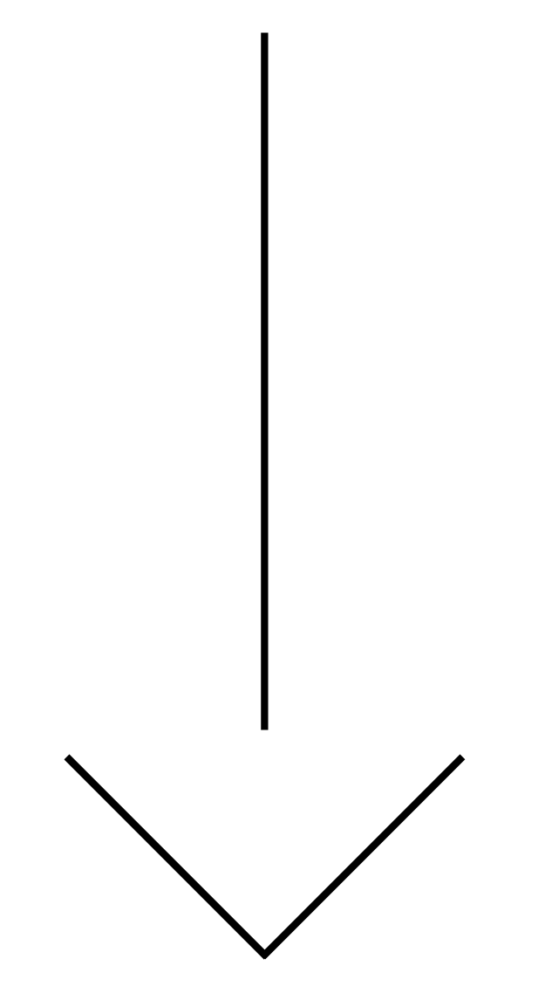
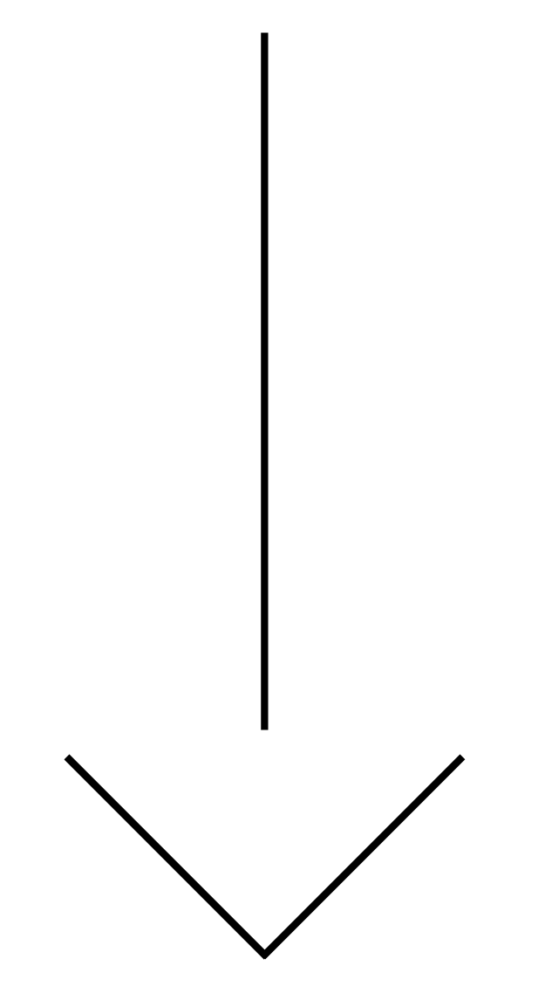

Op deze website lees je over een ontkiemend groen initiatief dat een mooi voortouw neemt in hoe je je eigen groenten kan verbouwen. Lees ook waarom je dit water zou willen geven in het drukke Amsterdam.
Klik op een icoon om verder te gaan!
(andere kleuren ook inbegrepen)
Op deze website lees je over een ontkiemend groen initiatief dat een mooi voortouw neemt in hoe je je eigen groenten kan verbouwen. Lees ook waarom je dit water zou willen geven in het drukke Amsterdam.
Klik op een icoon om verder te gaan!